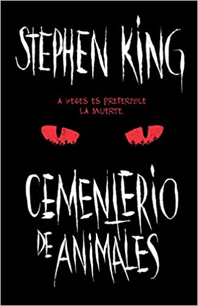

Informacion de mis estudios
Libro favorito: Cementerio de mascotas
narra la historia del doctor Louis Creed, que al poco de mudarse con su esposa Rachel y sus dos hijos pequeños desde Boston a un recóndito paraje de Maine,
descubre un misterioso cementerio escondido en lo más impenetrable del bosque , a escasa distancia del nuevo hogar familiar.
Cuando la tragedia alcanza a la familia, Louis recurre a su peculiar vecino,
Jud Crandall lo que pone en marcha una oscura reacción en cadena que despierta a una insondable fuerza maléfica con espantosas consecuencias.
